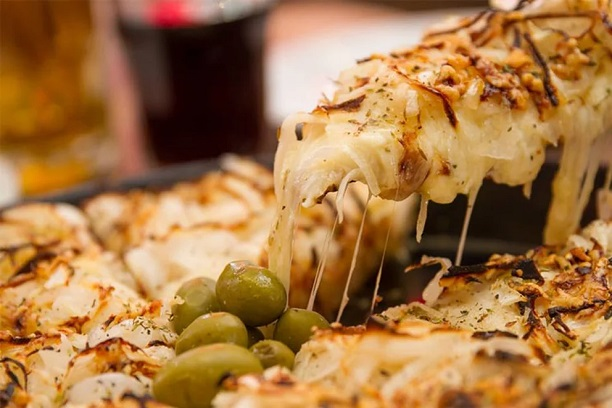

La Mezzeta

La Mezzetta es una Pizzería informal, que data de la década de 1930, con pocas mesas y en la que sirven pizzas y empanadas La Mezzetta está en el podio de las mejores pizzas de Buenos Aires. Es un lugar pequeño, así que es ideal si querés comer una porción de pizza a la hora de la merienda porque se te hizo tarde para almorzar o pedir para llevar unas ricas empanadas, fugazzeta, Pizza de molde y de postres torta de ricota, las porciones son grandísimas con mucho de todo.